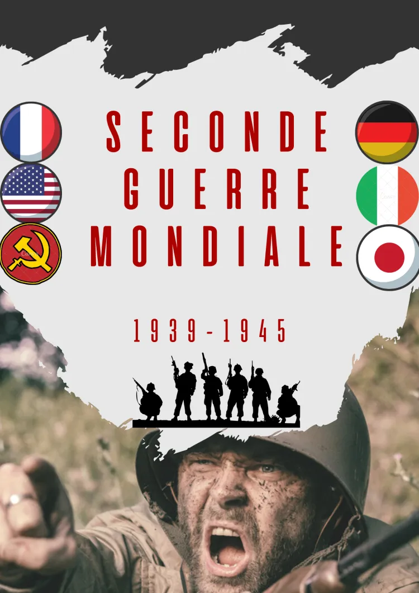
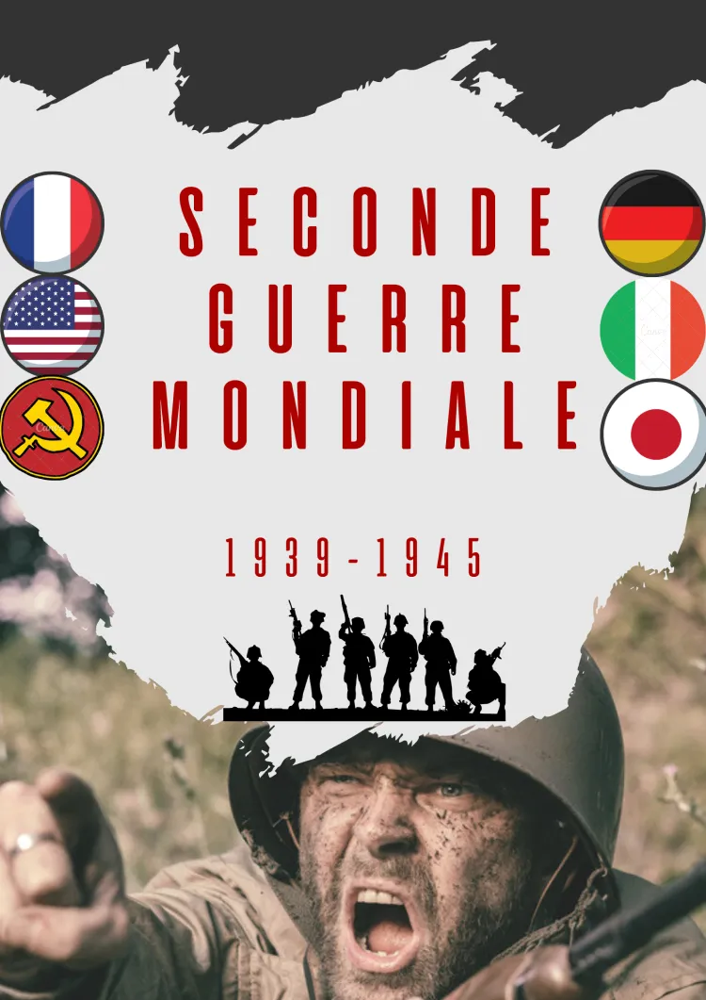
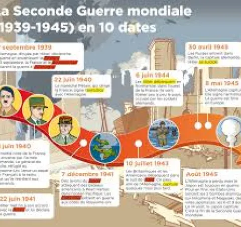

Les guerres , des moments marquant dans l’histoire du monde , des moments joyeux mais souvent triste , des mort , des bléssé , des familles endeuillés et les villes et pays détruits . Nous avons une pensé pour toutes les personnes qui ont vécu la guerre et on éspere qu’il n’y aura plus jamais de guerre , nous éspérons un monde de paix et de bohneur .
Livre ( Chronologie de la seconde guerrmondiale ) : un livre explixant tous ce qui c’est passé pendant la seconde guerre mondiale , avec les dates et contenu les plus important .  EN SAVOIR PLUS
Film (LA RUSE) : Un film qui est accès sur l’opération qui a couté la défaite a l’allemagne .
 EN SAVOIR PLUS
EN SAVOIR PLUS
Chanson ( Le chant des partisant) : L’hymne de la résistance , La chanson pour faire tenir les francais
pendant
l’occupation .
 EN SAVOIR PLUS
EN SAVOIR PLUS
Lieu ( Europe ) : L’europe qui a était le théatre des combats , avec les bataille , les mort et les bléssés .
 EN SAVOIR PLUS
EN SAVOIR PLUS
Espoir (Arret des guerre ) : La seconde guerre mondiale devait etre la derniere mais 4 ans après et
aujourd’hi
les
guerre sont toujours d’actualité .
 EN SAVOIR PLUS
EN SAVOIR PLUS
Regret ( La guerre) : La guerre , sa ne devrait pas exister , sa était crée par l’Homme est cela est triste .
 EN SAVOIR PLUS
EN SAVOIR PLUS